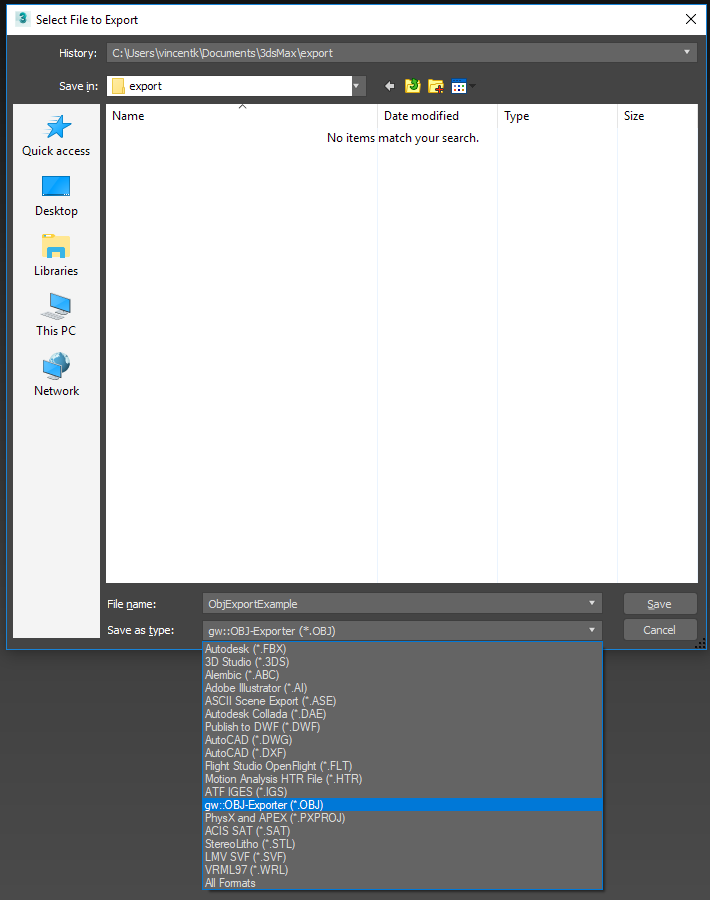
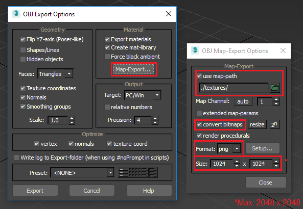

3Ds Max Export¶
Convert your 3ds Max model to a fully immersive true-to-life scale virtual reality model, instantly.
Ensure that your materials are set to the default materials in 3Ds Studio Max. And that your export units result in 1 Unit = 1 Meter. This might mean changing the global units in the file.
Project Information - 3Ds Max¶
Unfortunately we are not yet able to extract gps information from your 3Ds Max file.
Model Preparation - 3Ds Max¶
Please make sure your model is as clean as possible to ensure best performance.
Exporting a .WALK File¶
The Exporter will export everything that is visible in the view. Please hide objects and layers that does not require exporting.
Export from the File>Export Menu.
Export your file as an .OBJ
Select the high-lighted .OBJ Export options
Continue Here:
Enjoy your WALK
.